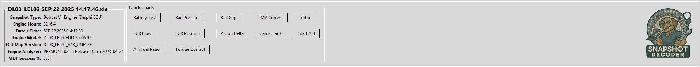
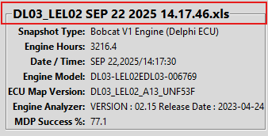
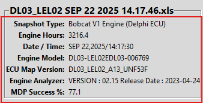

Snapshot Header Information
When you open a snapshot file, Snapshot Decoder extracts and displays important header information and Quick Charts from the snapshot.
Header Panel
The header panel appears at the top of the main window and shows key information extracted from the snapshot:

File Name Display
The currently loaded file name is displayed prominently so you always know which snapshot you're analyzing:

Header Information Details
The header information section displays extracted data from the snapshot file:

Tip: The information displayed in the header varies depending on the snapshot type
(V1 ECU, V1 EUD, or V2 ECU). Snapshot Decoder automatically detects the type and displays the
relevant fields.
Common Header Fields
- Engine Hours - Total operating hours of the engine
- Serial Number - Engine or ECU serial number
- Software Version - ECU software version
- Snapshot Date - When the snapshot was captured
- MDP Success Rate - Injector performance (V1 snapshots)